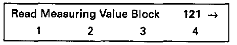
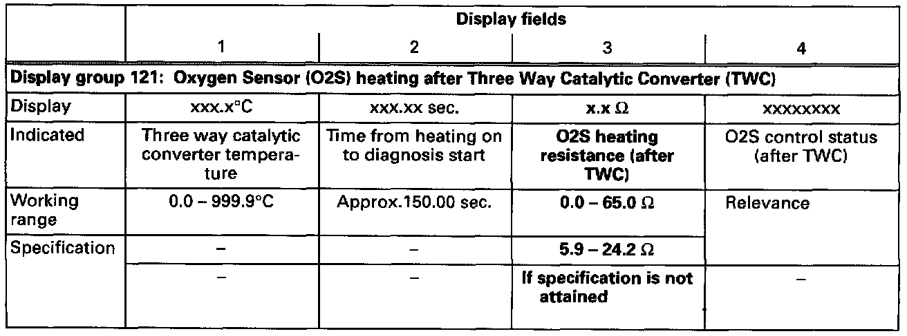
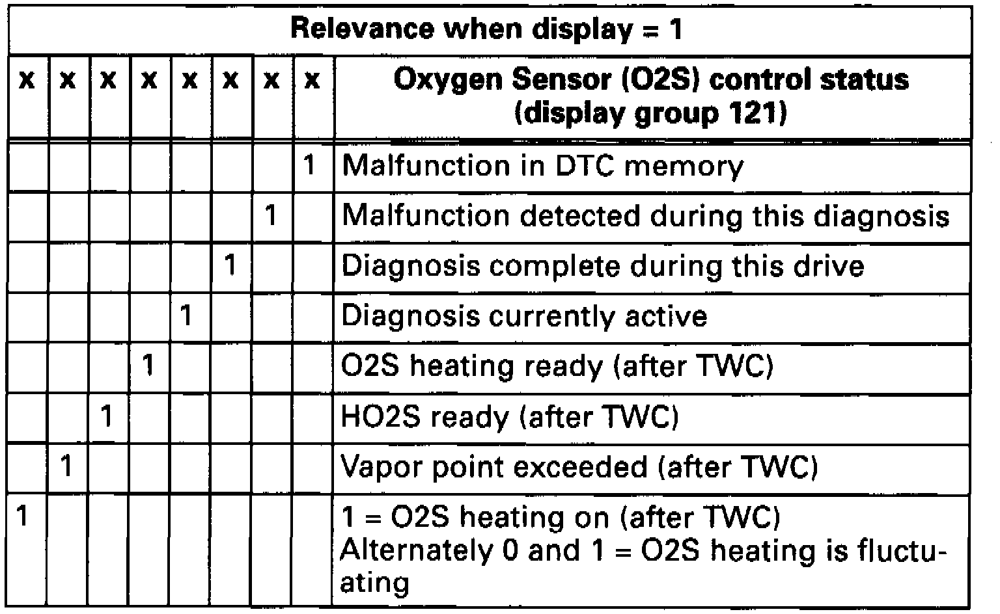
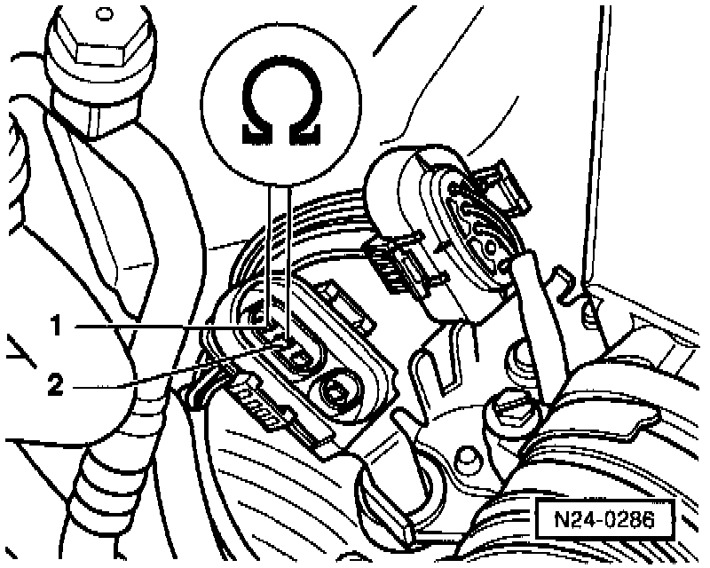
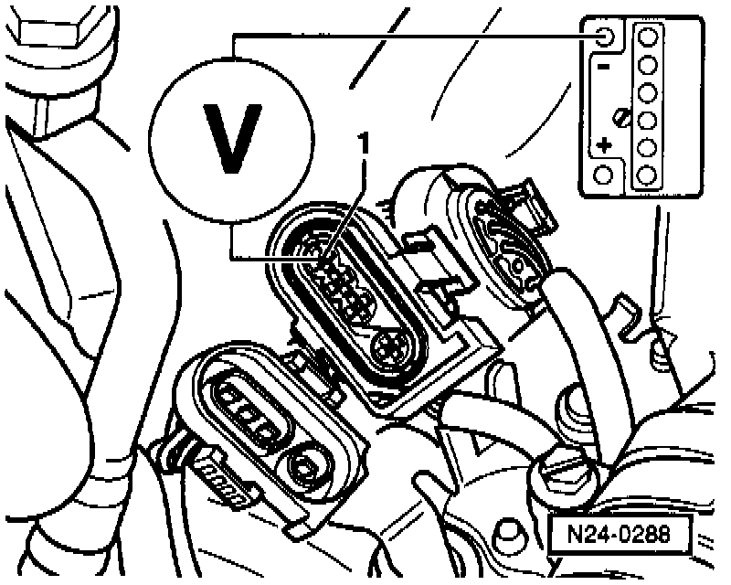
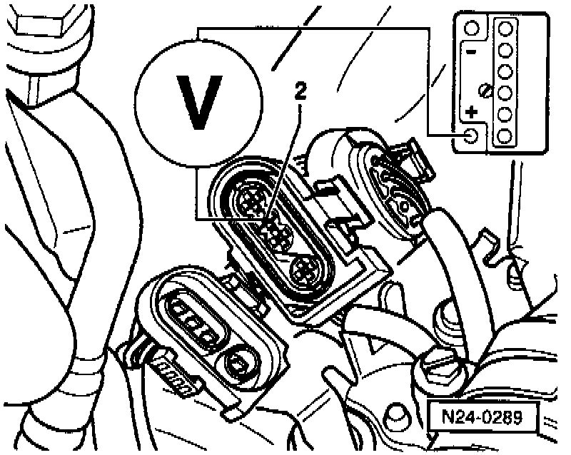
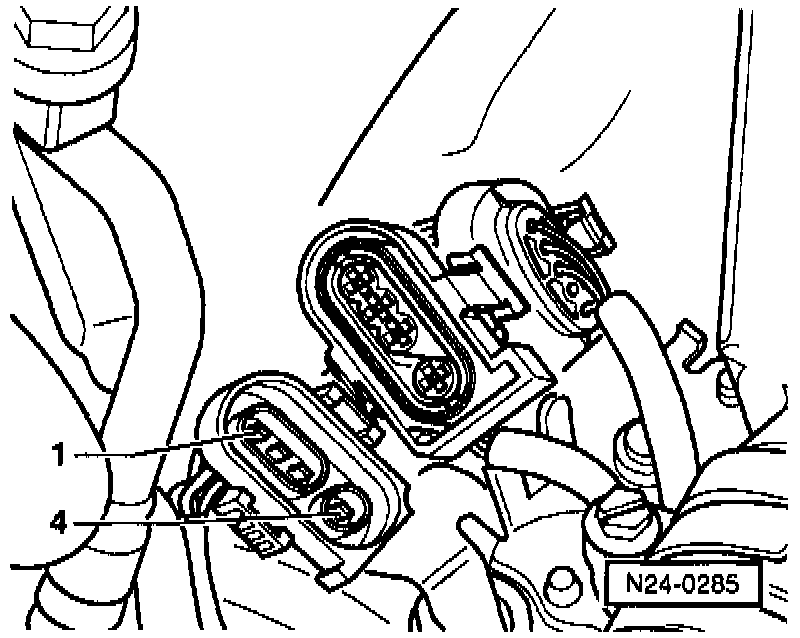

After TWC
Special tools, testers and auxiliary items:- VAG 1551/1552 scan tool with VAG 1551/3 adapter cable.
- VAG 1598/18 test box.
- Multimeter (Fluke 83 or equivalent).
- Connector test kit VW 1594.
- Wiring diagram.
Test conditions:
- Fuse 18 OK.
Test sequence:
- Connect VAG 1551/1552 scan tool and select "Engine Electronics" address word 01. When doing this the engine must be running at idle speed. Testing and Inspection

Indicated on display
- Press buttons -0- and -8- to select "Read Measuring Value Block" function 08 and press -Q- button to confirm input.

Indicated on display
- Press buttons -1-, -2- and -1- to input display group 121 and press -Q- button to confirm input.

Indicated on display (1-4 = Display fields)
- Check resistance value for O2S heating after three way catalytic converter (display field 3).

- Press -> button.
- Press buttons -0- and -6- to select "End Output" function 06 and press -Q- button to confirm input.
- Switch ignition off.
Relevance of values in 8-digit number block

Continuation

- Disconnect 4-pin connector -2- (brown) to HO2S 2 -G108- (after three way catalytic converter).

- Connect multimeter with test leads from VW 1594 to measure resistance at terminals 1 and 2 on connector to H025.
- Measure the resistance value.
Specification: 0.00-24.2 ohms.
If the specification is not attained:
- Replace Heated Oxygen Sensor (HO2S) 2 -G108- (after three way catalytic converter).
If the specification is attained:
Relevance of values in 8-digit number block
- Check relevance table for value of O2S control status, display group 121, display field 4, 1st position from left.
- Set multimeter to voltage measurement range.

- Connect multimeter with test leads from VW 1594 to measure voltage at ECM connector terminals 1 and 2.
- Measure the voltage supply.
When display = 1: specification is 11.0-14.5 volts.
When display = alternately 0 and 1: specification is fluctuating between 0.0-12.0 volts.
If no voltage is present:

- Connect multimeter using test leads from VW 1594 to measure voltage at ECM connector terminal 1 and vehicle Ground (GND).
Specification: 11.0-14.5 volts.
If again no voltage is present:
- Check wiring from terminal 1 to relay panel according to wiring diagram.
If voltage was present:
Relevance of values in 8-digit number block
- Check relevance table for value of O2S control status, display group 121, display field 4, 1st position from left.

- Connect multimeter with test leads from VW 1594 to ECM connector terminal 2 and battery positive (B+).
When display = 1: specification is 11.0-14.5 volts.
When display = alternately 0 and 1: specification is fluctuating between 0.0-12.0 volts.
- Switch ignition off.
If the specification is not attained:

- Connect VAG 1598/18 test box to ECM wiring harness (arrow).

- Check wiring between test box and 4-pin connector for open circuit according to wiring diagram.
Terminal 2 and test box socket 66.
Resistance: max. 1.5 ohms.
If no wiring malfunction is detected:
- Replace Engine Control Module (ECM) -J220-.
- Read the readiness code. If DTC memory has been erased, verify repair via appropriate display group See Readiness code, creating. Testing and Inspection